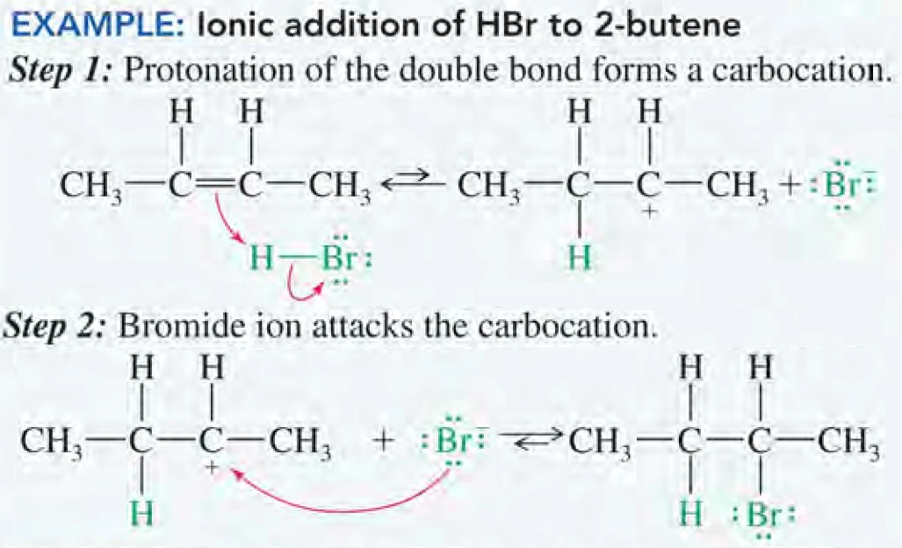
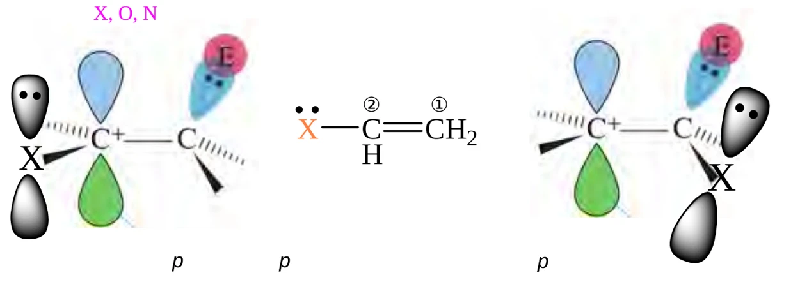
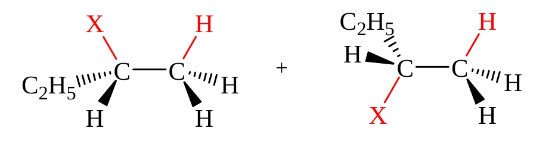
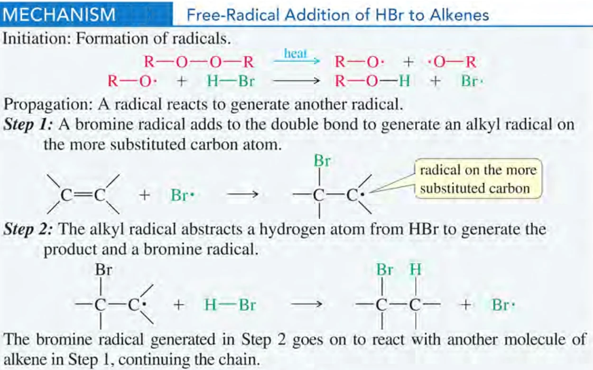
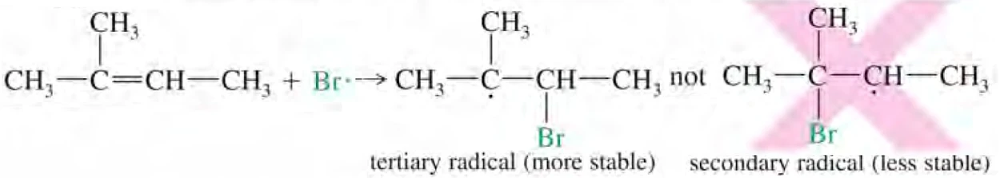
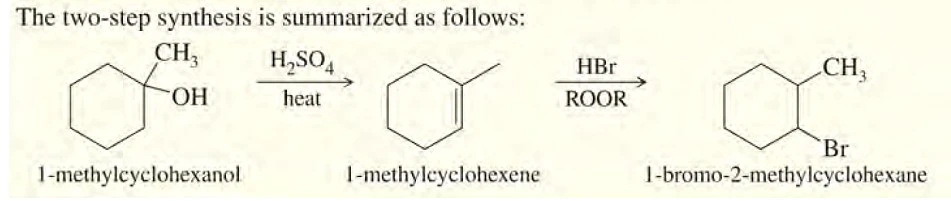
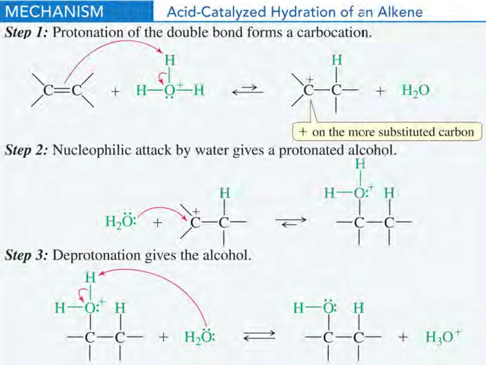
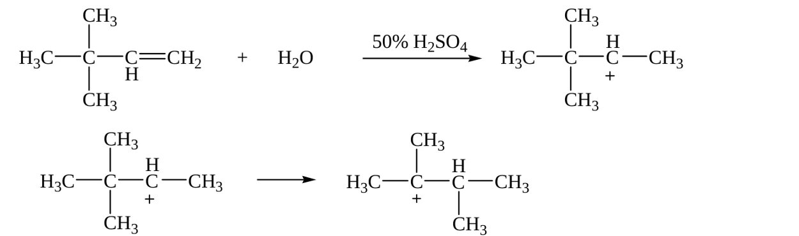
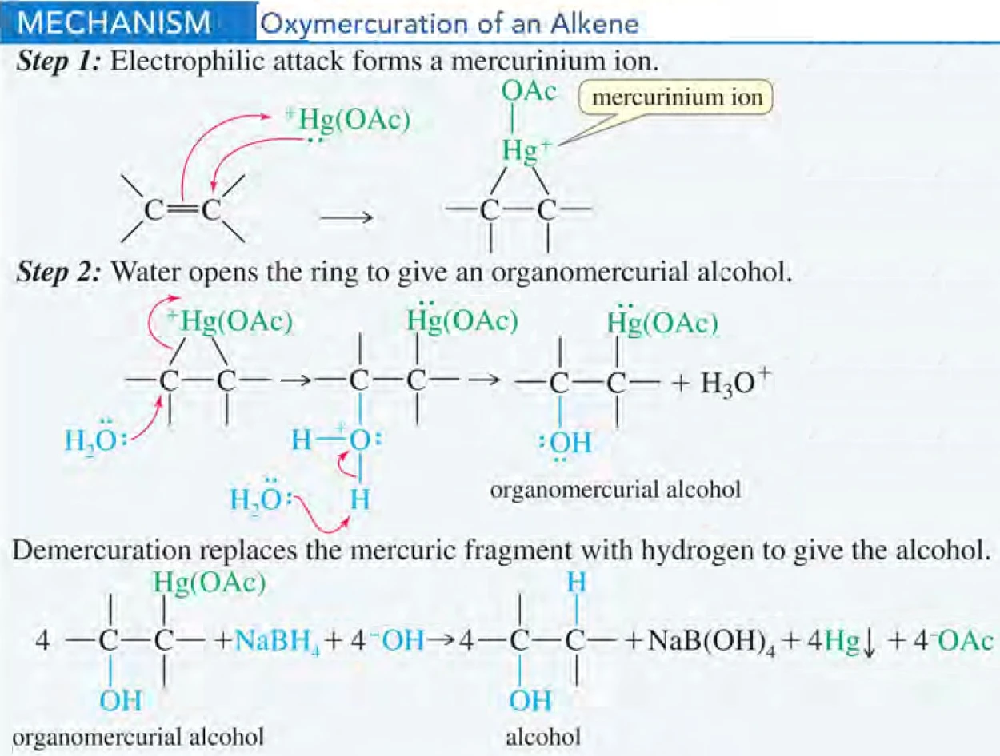
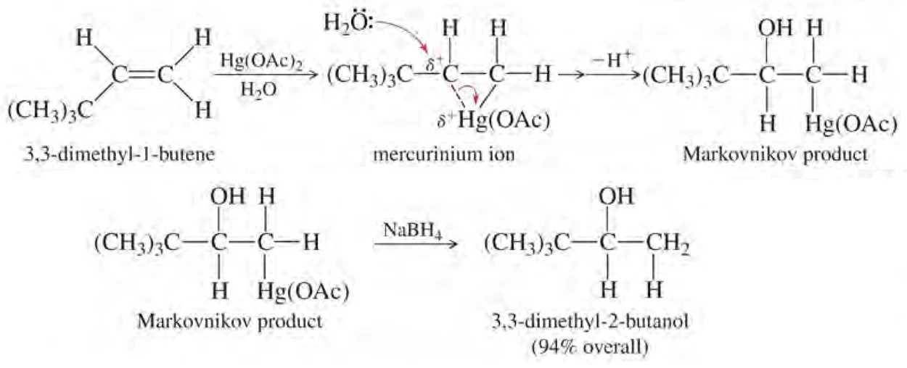

WEBSITE LESSON 16 · LECTURE 15 · CHAPTER 8-1
烯烃加成Ⅰ：HX 加成与水合
亲电加成电子流 · 区域与立体选择 · 自由基链反应 · 水合与重排
16.1 · ALKENE REACTIVITY
π 键、加成与反应能垒
烯烃加成使 C=C 变为 C–C，并在原双键两端形成新键。取代改变碳上连接的基团，消除形成多重键，加成则消耗多重键。课件列出的水合、氢化、卤化、氧化及环丙烷化属于不同试剂和机理；本讲实际展开 HX 加成和水合，不能把所有加成都画成同一种碳正离子历程。
双键含一根 σ 键和一根 π 键。π 电子分布在碳核连线两侧，比 σ 骨架电子更易参与反应，因而烯烃可向亲电体提供电子对。这里说的是两个碳之间 π 轨道的空间分布，不表示每个孤立双键都属于多中心共轭离域体系。
课件以 C=C 键能约 611、C–C 约 347 kJ·mol−1 估计 π 部分约 264 kJ·mol−1。加成常用较弱的 π 相互作用换取新 σ 键，能量上可能有利，但仍须比较全部断键、成键与介质影响。乙烯加氢虽放热，没有合适催化剂时速率仍很慢：热力学驱动力和反应能垒需要分别判断。
来源：Org. Chem. Lect. 15 (Chapter 8-1).ppt，slide 2–7。
16.2 · IONIC HYDROHALOGENATION
HX 离子型加成的电子流
普通 HCl、HBr、HI 对烯烃的极性加成可用两步模型理解。第一步，π 电子进攻 HX 中的氢，形成 C–H 键，同时 H–X 键电子对移到 X，生成碳正离子及卤离子。第二步，X− 用孤对电子进攻缺电子碳，生成 C–X 键。
弯箭头表示电子移动，箭尾从 π 键或孤对电子出发，箭头指向新成键位置；不能从正电荷符号向外画“电子流”。质子化后，原双键的一个碳获得 H，另一个碳形成缺电子中心，并不是先把两个碳都变成稳定四键结构，再设想卤离子从外面替换氢。

中间体与过渡态也要区分：碳正离子是机理中可讨论的能量谷，成键、断键中的过渡态是能垒顶点。亲核捕获之前若有更快的迁移通道，产物可能已经改变骨架，因此判断定位后仍应检查重排。
对于简单 HX 加成，形成高能正离子的质子化步骤往往控制反应快慢。较稳定的正离子通常对应较有利的形成通道，但严谨比较仍是比较活化自由能，不能把画出的中间体能量直接当成所有条件下的速率常数。生成物中的 C–X 键也不是在第一步就已经完整形成。
来源：Org. Chem. Lect. 15 (Chapter 8-1).ppt，slide 5–6、8–10。
16.3 · MARKOVNIKOV REGIOCHEMISTRY
马氏规则的依据与典型产物
对简单不对称烷基烯烃，马尔科夫尼科夫规则（Markovnikov’s rule）常表述为 H 加到原来含氢较多、取代较少的双键碳，X 落在取代较多的碳上。解释要比较两种质子化方向所产生的碳正离子：常见简单烷基体系中，三级比二级、二级比一级更稳定，相关形成路径通常更有利。
例如丙烯与 HBr 的离子型加成，先形成仲碳正离子，得到 2-溴丙烷；2-甲基丁-2-烯与 HBr 给 2-溴-2-甲基丁烷。1-甲基环己烯的质子加到无甲基的双键碳，溴最终位于带甲基的碳，生成 1-溴-1-甲基环己烷。
课件第 13 页的 2-甲基戊-2-烯加 HCl，常规定位产物为 2-氯-2-甲基戊烷；亚甲基环己烷加 HI 则使环外 CH2 变为 CH3，碘落在环上原双键碳。先追踪具体的碳，再按产物规则重新编号，可避免把原料编号机械照搬。马氏规则描述区域选择性，并不同时规定新立体中心的构型。
来源：Org. Chem. Lect. 15 (Chapter 8-1).ppt，slide 8–13。
16.4 · ELECTRONIC EFFECTS
吸电子与孤对电子效应
“取代越多越稳定”是普通烷基体系的经验，遇到强吸电子或共振基团时，要重新比较中间体。课件用 CF3–CH=CH2 说明：若正电荷出现在紧邻 CF3 的碳，强 −I 效应会使其不利；另一方向可给出形式上的反马氏连接 CF3–CH2–CH2X。
这是极性反应的电子效应讨论，不是过氧化物引发的自由基反应。也不宜据此断言所有带 CN、COOH、NO2 的烯烃都按同一个简单式顺利加 HX；基团位置、共轭、反应介质及底物本身活性仍需检查。
若双键碳直接连 O、N 或卤素等有孤对电子的原子，邻近正电中心可由孤对电子与空 p 轨道重叠而稳定，形成相应共振贡献式。卤素既有吸电子诱导又能共振给电子，所以“定位偏好”与“整体反应快慢”不能只用一个标签代替。课件中 −OCOR 是酰氧基，−COOH 才是羧基。

来源：Org. Chem. Lect. 15 (Chapter 8-1).ppt，slide 14–16。
16.5 · STEREOCHEMISTRY OF HX ADDITION
位置选择与立体结果分开判断
简单碳正离子中心近似 sp2 平面，空 p 轨道允许亲核体从两面进攻，因此普通离子型 HX 加成通常没有固定的同面或异面加成专一性。若生成一个新手性中心，且底物、试剂和环境都无手性，两条对映路径等价，通常形成外消旋产物。
丁-1-烯加 HBr 得 2-溴丁烷时，新手性中心在连 Br 的碳；原末端 CH2 加 H 后变成 CH3，含三个相同氢，并不是另一个手性中心。课件第 17 页的两种画法应辨认为一对对映体，不宜仅按新加 H 与 X 的纸面方向叫作两种“顺反异构体”。

若原料已有手性中心，两面可能为非对映异位面，产物比例未必相等。判断应逐个检查每个四面体碳是否连接四种不同基团；“符合马氏定位”不能推出没有手性，也不能推出必定等量生成所有立体异构体。
来源：Org. Chem. Lect. 15 (Chapter 8-1).ppt，slide 17。
16.6 · PEROXIDE EFFECT & RADICAL CHAIN
过氧化物效应的链式机理
1933 年 Kharasch 与 Mayo 的研究把 HBr 加成的反常定位联系到过氧化物。RO–OR 的 O–O 键可均裂，生成烷氧自由基；它从 HBr 夺取氢原子，产生真正参与链传播的 Br·。过氧化物是引发剂，会被消耗，不应当作在完整循环中原样再生的普通催化剂。
RO·＋HBr → ROH＋Br·
Br·＋CH2=CH–R → BrCH2–ĊH–R
BrCH2–ĊH–R＋HBr → BrCH2–CH2–R＋Br·
传播第一步是 Br· 加到双键，第二步是碳自由基从另一分子 HBr 夺 H，随后再生 Br·，由此连续消耗烯烃和 HBr。自由基机理用单电子鱼钩箭头表示；双电子弯箭头不能直接照搬。终止步骤可由两个自由基结合完成，一次结合会减少链载体数量。

连续传播说明一次引发可以对应多次加成，不表示自由基总数会无限增加。若两个链载体碰撞结合，链便终止；增加引发剂未必按同一倍数增加最终反应速率。画完机理后，可把两步传播相加，消去两边的 Br· 和碳自由基，核对净反应确实只消耗一分子烯烃与一分子 HBr。
来源：Org. Chem. Lect. 15 (Chapter 8-1).ppt，slide 18–20。
16.7 · RADICAL REGIOSELECTIVITY
为什么反马氏，以及为何只适用于 HBr
在离子路径中，先加的是 H，定位取决于所形成碳正离子的稳定性；在自由基路径中，先加的是 Br·，定位取决于所形成碳自由基的稳定性。对简单不对称烯烃，Br· 加在取代较少端，可把自由基留在取代较多端，随后该自由基夺 H，最终得到反马氏溴代物。
例如 2-甲基丁-2-烯形成更稳定的三级自由基，最终为 2-溴-3-甲基丁烷。这里自由基较多取代通常更稳定，不能解释成“自由基不喜欢多取代碳”；Br 最终连接的位置与中间自由基所在的位置是两个相邻碳。

维持链反应还要求两步传播在热力学与动力学上可行。课件示例中 HBr 两步传播均放热；HCl 的夺氢步骤因 H–Cl 键较强而不利，HI 的 I· 加双键步骤因 C–I 键较弱而不利，故不能仅靠加过氧化物把 HCl、HI 的普通加成都改成反马氏。微量引发与离子路径竞争时可出现混合产物，实际选择性还取决于反应条件。
来源：Org. Chem. Lect. 15 (Chapter 8-1).ppt，slide 20–22。
16.8 · SYNTHETIC PLANNING
用反应顺序把卤素放到目标碳
1-甲基环己烯直接进行离子型 HBr 加成，可得到溴和甲基位于同一碳的产物；加入合适自由基引发条件，则可把 Br 放到相邻碳。选择试剂前先在纸上标出目标 C–Br 键，比背诵“氢多加氢”更可靠。
课件从 1-甲基环己醇制备 1-溴-2-甲基环己烷的路线，是先酸催化脱水形成 1-甲基环己烯，再进行 HBr 自由基加成。直接把原 OH 换成 Br 会保留其原连接位置，无法达到邻位换位的目标。

酸性脱水可能给烯烃混合物，路线设计仍需检查主产物及分离问题。图中的平面六边形未指定楔线、虚线，因此不能据图额外宣称只得到一个顺式或反式异构体。区域选择和立体控制需要分别验证。
来源：Org. Chem. Lect. 15 (Chapter 8-1).ppt，slide 23–24、41。
16.9 · ACID-CATALYZED HYDRATION
酸催化水合的三步与催化循环
水合把 H 和 OH 加到双键两端，净生成醇。水本身对多数普通烯烃的反应过慢，强酸提供质子化通道：先由双键接受质子形成较稳定碳正离子，再由水的氧孤对电子进攻，最后失去一个质子得到中性醇。
CH3–CH+–CH3＋H2O ⇌ CH3CH(OH2+)CH3
CH3CH(OH2+)CH3＋H2O ⇌ CH3CH(OH)CH3＋H3O+
水进攻后的直接产物是氧鎓离子，氧连接三根键并带正电，不能漏写其去质子化步骤。H3O+ 在循环末再生，所以酸具有催化作用；提供产物 OH 的氧则来自水。简单底物通常呈马氏定位，例如丙烯得到丙-2-醇，2-甲基丁-2-烯得到 2-甲基丁-2-醇。

酸性水中实际承担亲核捕获的主要物种是大量存在的水，不能一边设定强酸环境，一边默认有高浓度 OH− 去进攻。去质子化可由另一分子水完成，净反应虽然写成直接加入 H 与 OH，实际不等于先把水均裂为两个自由基，或把整个反应画成一步协同水合。
来源：Org. Chem. Lect. 15 (Chapter 8-1).ppt，slide 25–31。
16.10 · MICROSCOPIC REVERSIBILITY
微观可逆性与平衡控制
在相同条件下，互为逆向的基元路径应按相反顺序经过相同的过渡态和中间体，这就是本课使用的微观可逆性原则。水合逆向看时，醇先被质子化，使 OH 变为较好的离去基团水，再失水形成碳正离子，最后去除邻位质子恢复双键。
过量水有利于水合，脱水性酸、加热及移走生成物则可推动醇脱水。两种操作的实际组成和温度可不同，因此原则并不意味着所有不同条件下的宏观反应都必须只有一条相同机理。
催化剂降低能垒、加快接近平衡，但不改变同一条件下的平衡常数。课件“能量不利则催化无用”的表述应理解为催化剂不能单独把不利的平衡改成有利；不等于平衡不利时绝无任何产物。强酸水合还可能受溶解度、聚合、重排及其他副反应限制，故需比较替代方法。
来源：Org. Chem. Lect. 15 (Chapter 8-1).ppt，slide 25–27、35。
16.11 · HYDRATION & REARRANGEMENT
3,3-二甲基丁-1-烯的甲基迁移
把底物写作 CH2=CH–C(CH3)3。末端接受 H 后，最初形成 CH3–CH+–C(CH3)3，为仲碳正离子。邻位季碳没有可迁移的氢，却有可迁移的 C–CH3 键，因此可发生 1,2-甲基迁移。

迁移后的正电荷位于原季碳，形成三级碳正离子；随后水捕获并去质子化，生成重排产物 2,3-二甲基丁-2-醇。迁移的是连同电子对的一根键，分子总碳数不变，不是游离甲基正离子跳到另一处。
若没有骨架迁移而直接在原仲碳正离子处捕获，则得到 3,3-二甲基丁-2-醇。两种醇不是只把同一结构重新编号，而是真正不同的连接方式。重排、捕获和消除之间存在竞争；写机理时先标记各碳，再追踪迁移，能避免把它误当作共振。
为了查错，可以暂把原双键末端、内部碳和季碳分别标为 A、B、C。质子化后正电在 B；C 上的甲基迁到 B 后，B 得到一根新键而 C 失去一根键，正电转到 C。最后 OH 落在 C。临时字母只用于追踪，不代替产物正式命名时重新选择主链和最低位次。
来源：Org. Chem. Lect. 15 (Chapter 8-1).ppt，slide 32、39–41。
16.12 · ADDITION OF ACIDS
硫酸与有机酸加成、间接水合
烯烃可在适当酸性条件下与硫酸加成，形成烷基硫酸氢酯，再经水解得到醇；有机酸如乙酸也可参与形成酯。由于这些课内路径涉及碳正离子，需同时检查马氏定位、骨架重排及较差的立体专一性。
CH3CH2–O–SO3H＋H2O → CH3CH2OH＋H2SO4
中间体通过氧连到硫酸根部分，不应写成碳直接连硫。课件以乙醇、异丙醇及叔丁醇制备说明间接水合法，也用烯烃能与硫酸反应、烷烃相对不反应说明分离原理。
课件另列乙烯在载体磷酸催化下直接水合的工业示例，条件约 300 °C、7–8 MPa。这里温度、压力、催化和投料比共同影响速率与转化，不能把“加水”理解成常温下把烯烃与水混合就会快速反应，也不宜把课件举例当作所有工业装置的统一参数。
来源：Org. Chem. Lect. 15 (Chapter 8-1).ppt，slide 33–34。
16.13 · OXYMERCURATION–DEMERCURATION
羟汞化—脱汞化的区域与立体化学
另一种马氏水合采用两步试剂：先 Hg(OAc)2 与 H2O，常配合适当共溶剂；再以 NaBH4 在相应条件下脱汞，最终用 H 取代 C–Hg 键。OAc 表示乙酸根部分。
烯烃与亲电汞物种作用，生成三元桥式汞鎓离子（mercurinium ion）。桥中碳具有不均匀的正电性，水通常进攻较多取代碳，开环后经去质子化得到有机汞醇。因为不经过通常那种游离、局部化的碳正离子，典型氢迁移和烷基迁移受到抑制。

课件“没有正离子形成”应改为“没有游离碳正离子”，桥式中间体本身带正电。开桥时水与汞通常从相反面形成关系，但脱汞阶段可涉及自由基，最终 H 的引入不固定保持某一方向，所以整体反应不能笼统称为严格异面水合。
3,3-二甲基丁-1-烯经此路线主要保留骨架，得到 3,3-二甲基丁-2-醇，和酸水合主要得到的重排醇形成对照。“同为马氏水合”描述局部定位，不保证在会重排的底物上给同一骨架。

桥式结构同时解释了两个观察：水优先进攻正电性较明显的一端，仍给马氏连接；另一方面，碳骨架没有机会像游离碳正离子那样轻易迁移。这不是“反马氏水合”，也不能因为试剂步骤较多就把末端 OH 作为默认答案。要在最终产物中把原 C–Hg 位置换成 H，再检查各碳价态。
来源：Org. Chem. Lect. 15 (Chapter 8-1).ppt，slide 35–40。
16.14 · COMPARISON & PROBLEM CHECKS
方法比较与作业检查
| 条件 | 常见位置结果 | 机理检查 |
|---|---|---|
| HX，离子条件 | 简单烯烃为马氏定位 | 碳正离子，检查重排 |
| HBr，自由基引发 | 简单烯烃为反马氏定位 | 先 Br· 加成，再夺 H |
| H2O、酸 | 马氏水合 | 可重排、可逆 |
| 羟汞化—脱汞化 | 马氏水合 | 桥式中间体，通常不重排 |
作业 8-4 的丁-1-烯制 1-溴丁烷用 HBr 自由基条件，制 2-溴丁烷则用离子条件。2-甲基环己醇可先脱水，再对合适烯烃作离子型 HBr 加成；2-甲基丁-2-醇制 2-溴-3-甲基丁烷，则可先取得 2-甲基丁-2-烯，再作自由基 HBr 加成。多步路线需确认脱水异构体与所需加成方向。
作业 8-5 印成少量“3,3-dimethylbut-2-ene”，按该名称画出会使 C3 有五个键级总和，违反碳四价，原题需核对。若讨论本讲重排后三级碳正离子的 β-H 消除，合理候选是 2,3-二甲基丁-2-烯；这属于机理推断，不能直接冒充原题确认答案。
做题依次确定试剂与离子或自由基条件，画第一步后比较中间体，检查迁移和捕获，再判断立体中心，最后重新命名并核对碳数、氢数及价态。反应名称和定位口诀只负责其中一部分。
若题目只给“加 HBr”而未说明过氧化物或其他自由基条件，课内默认先按普通离子加成分析；若明确 ROOR，则检查 HBr 链反应。不要把“看到反马氏产物”反推为所有条件必有过氧化物，电子吸引基团造成的极性定位改变属于另一类解释。
来源：Org. Chem. Lect. 15 (Chapter 8-1).ppt，slide 23–24、35–41。